本周，我们将主要运用图形本身所具有的性质与从题设进行分析的角度来解决问题．
【解题技巧】
运用图形性质解决问题．
【基本公式】
1．高一定时，三角形的面积与底成正比例．
2．三角形等底等高，则两者的面积相等；等底等高的平行四边形面积也相等．
（第九届“走美杯”初赛）如图所示，正方形ABCD 的边长是5厘米，则阴影部分的面积是____平方厘米．
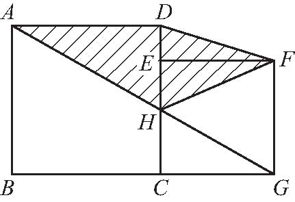
【答案】 12.5．
【解析】 如图所示，连接DG ．因为三角形DHG 和三角形DHF 等底等高，则两者的面积相等，于是可知，阴影部分的面积就等于三角形AGD 的面积，利用三角形的面积公式即可求解．则所求阴影部分面积是5×5÷2＝12.5（平方厘米）．
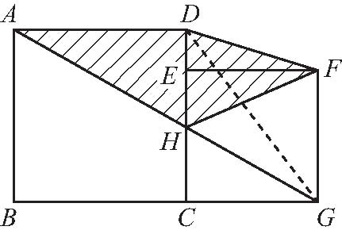
【举一反三1】
（第二十届“祖冲之杯”）如图所示，梯形ABCD 中，A B ＝15厘米，AD ＝12厘米，阴影部分的面积为15平方厘米，梯形ABCD 的面积是多少平方厘米？
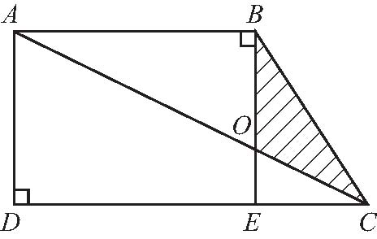
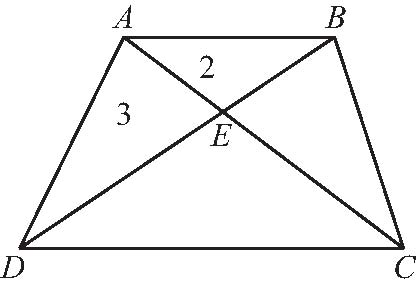
（第八届“走美杯”初赛）如图所示，梯形ABCD 中，△A BE 和△ADE 的面积分别是2平方厘米，3平方厘米，则△CDE 的面积是____平方厘米．
【答案】 4.5．
【解析】 由于△ABE 和△ADE 的面积分别是2平方厘米，3平方厘米，因为平行线间的距离处处相等，所以可得△BEC 和△ADE 的面积相等，也是3平方厘米，则△ABE 和△BEC 的面积比是2∶3，所以可得AE∶EC ＝2∶3，所以△ADE 和△CDE 的面积比是2∶3，则△CDE 的面积是
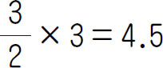
（平方厘米）．【举一反三2】
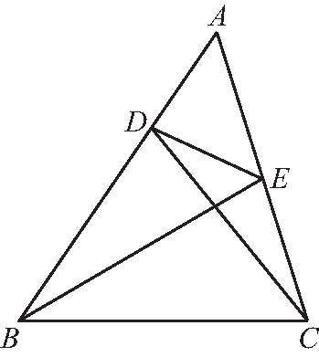
（第十届“希望杯”培训题）如图所示，已知BD ＝2AD ，AE ＝CE ，那么△A B C 的面积是△ADE 面积的___倍．
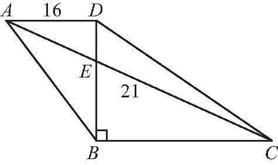
（第十一届“希望杯”初赛）如图所示，若梯形ABCD 的上底AD ＝16厘米，高BD ＝21厘米，并且BD ＝3DE ，则三角形ADE 的面积是___平方厘米，梯形的下底B C 长___厘米．
【答案】 56；32．
【解析】 （1）三角形A BD 的面积是16×21÷2＝168（平方厘米），又因为BD ＝3DE ，即ED∶BD ＝1∶3，所以三角形ADE 的面积∶三角形A D B 的面积＝1∶3，则三角形ADE 的面积是168÷3＝56（平方厘米），
（2）梯形ABCD 中，因为A D∥B C ，所以△ADE 和△C B E相似，因为BD ＝3DE ，即DE ∶BE ＝1∶2，所以AD ∶C B ＝1∶2，又因为AD ＝16厘米，所以C B ＝16×2＝32（厘米）．
【举一反三3】
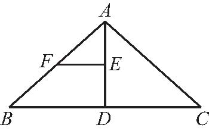
（第十一届“希望杯”决赛）如图所示，若△A B C 的面积是24，D、E、F 分别是B C 、A D、A B 的中点，则△B EF的面积是___．
如图所示，正方形硬纸片ABCD 的每边长20厘米，点E、F分别是A B 、B C 的中点．现沿图①中的虚线剪开，拼成如图②所示的一座“小房子”，则图②中阴影部分的面积是___平方厘米．
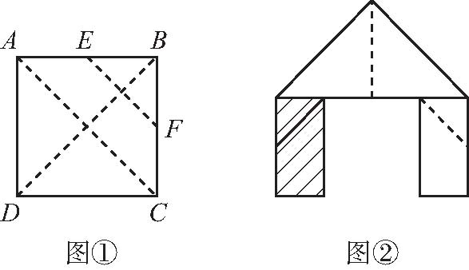
【答案】 100．
【解析】 由图①可知，阴影部分的面积等于正方形面积的四分之一．正方形的面积为20×20＝400（平方厘米），所以图中阴影部分的面积是400÷4＝100（平方厘米）．
【举一反三4】
（第十二届“小机灵杯”初赛）如图所示，一张矩形纸片沿直线A C 折叠，顶点B 落在点F 处，第二次过点F 再沿直线DE 折叠，使折痕DE ∥A C ，若A B ＝5，B C ＝3，则梯形A CDE 的面积为___．
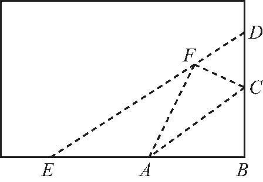
1．（第十届“希望杯”决赛）如图所示，两个形状和大小都相同的直角三角形A C B 和直角三角形EDF 的面积都是10平方厘米，每个直角的直角顶点都恰好落在另一个直角三角形斜边上，这两个直角三角形的重叠部分是一个长方形．那么四边形ABEF 的面积是___平方厘米．
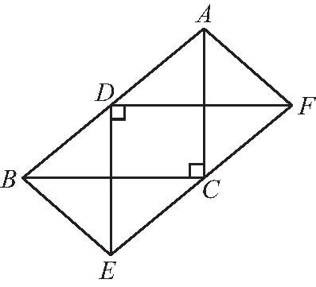
2．如图所示，已知长方形面积是56平方厘米，A 、B 分别是长和宽的中点，则阴影部分的面积是___平方厘米．
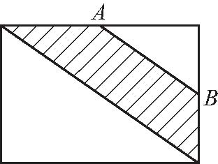
3．（第二十届“祖冲之杯”）如图所示，长方形的面积是小于100的整数，它的内部有三个边长是整数的正方形，正方形②的边长是长方形长的
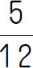
，正方形①的边长是长方形宽的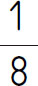
，那么图中阴影部分的面积是多少？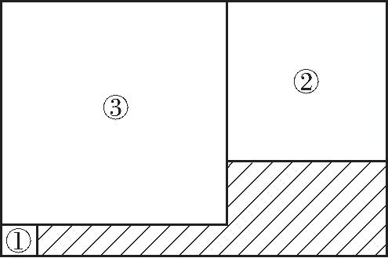
4．（第十一届“希望杯”初赛）如图所示，梯形ABCD 与正方形DEFC 拼在一起，AF 与DE 交于点G ．已知B C ＝CD ＝4，三角形AGD 的面积是三角形DGF 面积的2倍．
（1）求梯形ABCD 的面积．
（2）比较三角形GEF 和三角形AGD 的面积大小．
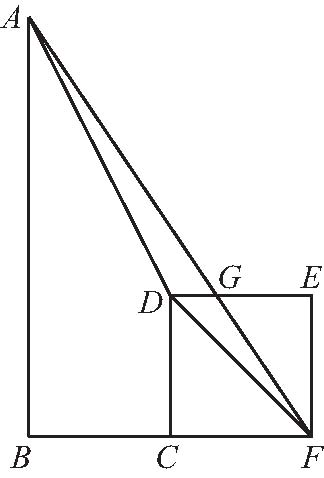
5．如图所示，ABCD 是边长为6的正方形，ADGH 是一个梯形，点E、F 分别是AD、GH 的中点，HF ＝6，EF ＝4，EF ⊥GH ．连接HE 并延长交CD 于点I ，作IJ ⊥HA ，则IJ ＝___．
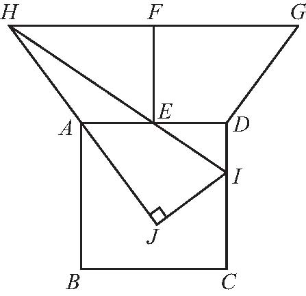